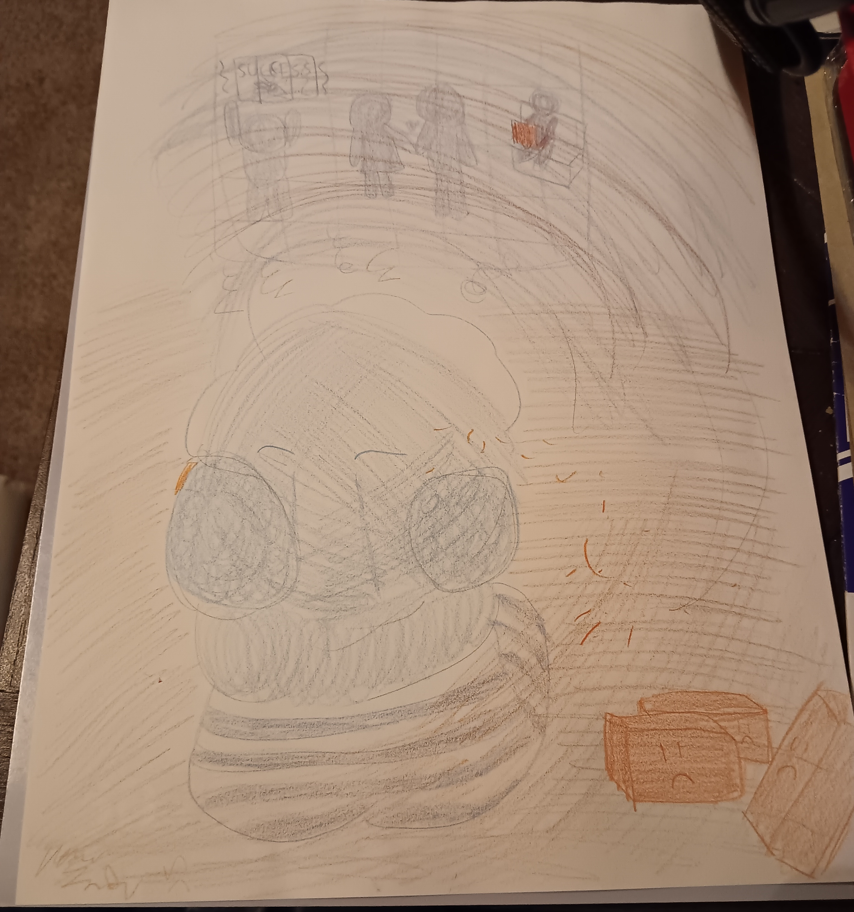
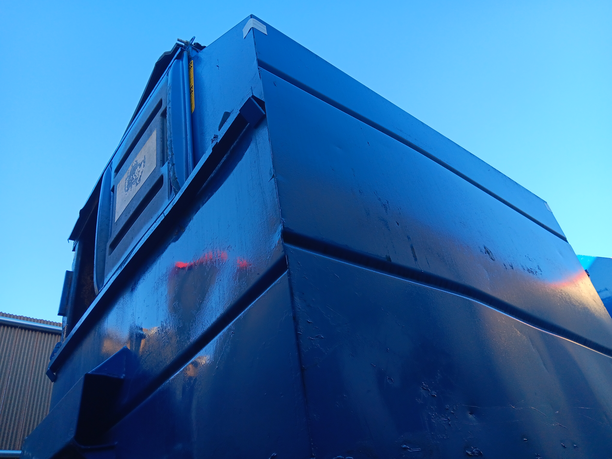
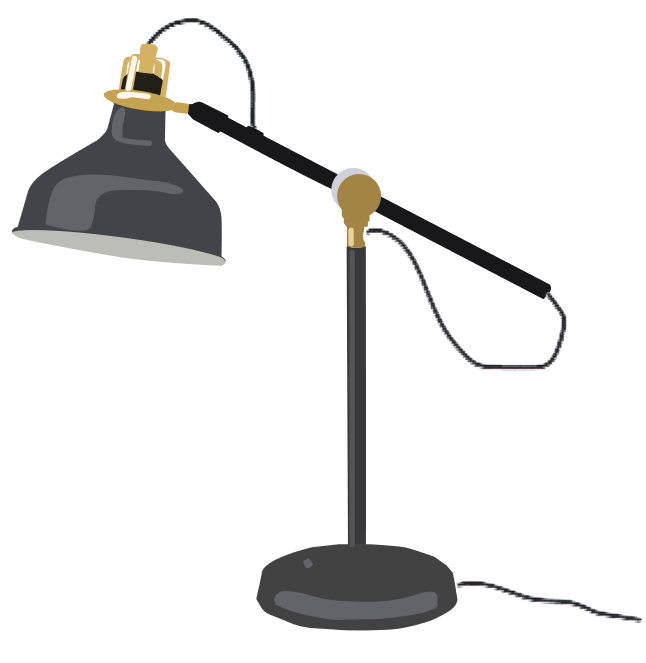

Welcome to Aaron Smith's Personal Portfolio Web Site!

This is a drawing representing inequity in the justice system.
The victim has been sentenced to life for a crime he did not commit.
He longs for the things others take for granted.
Sometimes, life is just unfair.

A logo for my Graphic Design class.
This was originally going to be purple, but I realized orange would fit better.

These are the sketches I drew before deciding on the one used above.

This is the final version of my personal logo.
Basically, it's a keyboard company and arrow keys are recognized by all gamers, so I ended up with that design.

This is the first version of my personal logo.
I ended up removing the black outlines since they were too sloppy.

This is a ant's eye view of the dumpster from my work.
It's in HDR, and is one of my two HDR projects in this portfolio.

This is my other HDR project.
It depicts a view of the outside world from the inside of a barn.
Personally I love the lighting the HDR gives, it makes it look like it was in a dream.

This was a face I painted for my Art History class,
intended to mimic the art from the Expressionism era (which was a modernist movement).
Did you know this emoji -> 😱 came from the expressionism era painting The Scream by Edvard Munch?

This was a really abstract painting depicting a cashier at work.
I was dreaming about my work and when painting, was the first thing that came to my mind.

This was a business card from one of my Graphic Design courses a few years ago.
It's simple enough to get the point across.
I don't think the gradient looks very good.

This is a lamp drawing I drew in order to get used to Adobe Illustrator.

This was my final logo for Candle Soda, a fictitious soda company who was in need of an updated logo.